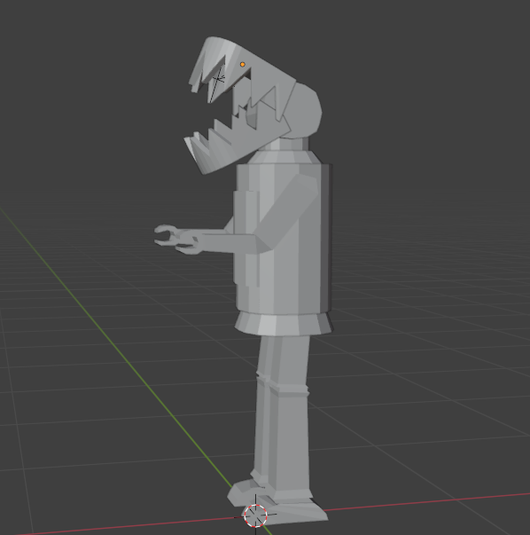

Project 2:
Low Poly Character
For this project I made a low poly 3D character in blender for a game later in the year. For this
charater I modeled it, did some rigging but run out of time on animating. This character is a very cartoonish
robot and simple so it can be easily understood, attract younger auidences and having a lighter less heavy feel.
End users

My end users are kids and teenagers between the ages 7-20. The game will have a simpler
art style and have an easier diffculty for younger audiences. The game will also use stratagy and
have harder options. The game will also have some darker elements and while the main character is cute
for younger audiences the enemies won't be as cute for older audiences and the main character and enemies
also have little colour for older audiences. I will also give the character quite cartoonish and robotic animations
for younger auidences.
Requirements and Specifications
For this game the character needs to be able to move, dodge, block and attack. I also want the
character to be able to change their limbs into different ones with different abilties so
the player has to use stratagy and choose what combos they want to make. So the character
needs to have quite a basic template which I can change and they need to have limbs which
can be easly animated.

Relevant Implications
Aesthetics
My character will have simple and boxy shapes in order to show that the character
is inorganic and robotic and to make this character feel a lot less aggersive,
estatict, unstable and scheming then the sharp enemies around it expect for its sharp
teeth which it only shows in combat to show that this machine is not entirely harmless.
I will also use grays and dim colours to show how the machine is not a part of the natural
world.
Functionality
I added joints in between the limbs and bent them to allow for easy and
smooth animations and rigging.
Usability
I made my character very simple and made it human like so people can easily understand the design
while still understanding it is a robot.
Intellectual Property
I changed the head and body of my character to make sure that it is very different then other
characters.

Development
For this task I designed and created a 3D design of a robot. In order to make this I first made a copy
of the design on paper which I then later put on blender to use as a baseplate for my model. I modelled my
character limb by limb using the sheet. I tried using instructions given to us but due to me chosing to make my
inorganic and unsmooth and overall different from the instructions they didn't really work all to well so I did
most of the model myself. I also had a problem in which I found it very hard to do my work at home so I could only
really do my work at school. I made a test character also on blender and I used its head for the acutal character's
head.
Testing

For this model I first made a test character in which I tried to see how I was going to make this model and how I
could make it's jaws aswell as how to make them working which took a large portion of my time.
Feedback
Does this character suit its intended audience? Why or why not?
- The head is to big.
- The head would be really good if it was bigger because of it would allow it to be cartoonish for kids while not
being to big to be complety unrealistic for older audiences.
What do you think of the proportions?
- It’s good but make the character’s legs bigger to make it less top heavy.
- The arms are to low to be realistic put them higher.
Improvements
While one of the feedbacks was to make the head bigger another feedback was to make it bigger so I desided to do
something in the middle which I think works really well. I also made the legs bigger to make the proportions better
and put the arms higher to make it more realistic. I think these changes made the design a lot better.


P1
P3